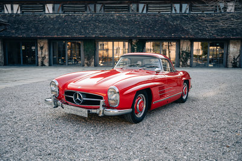
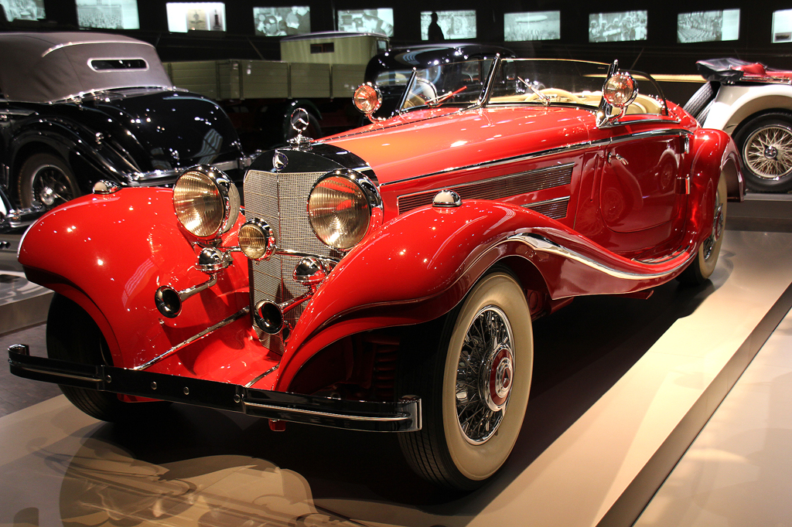
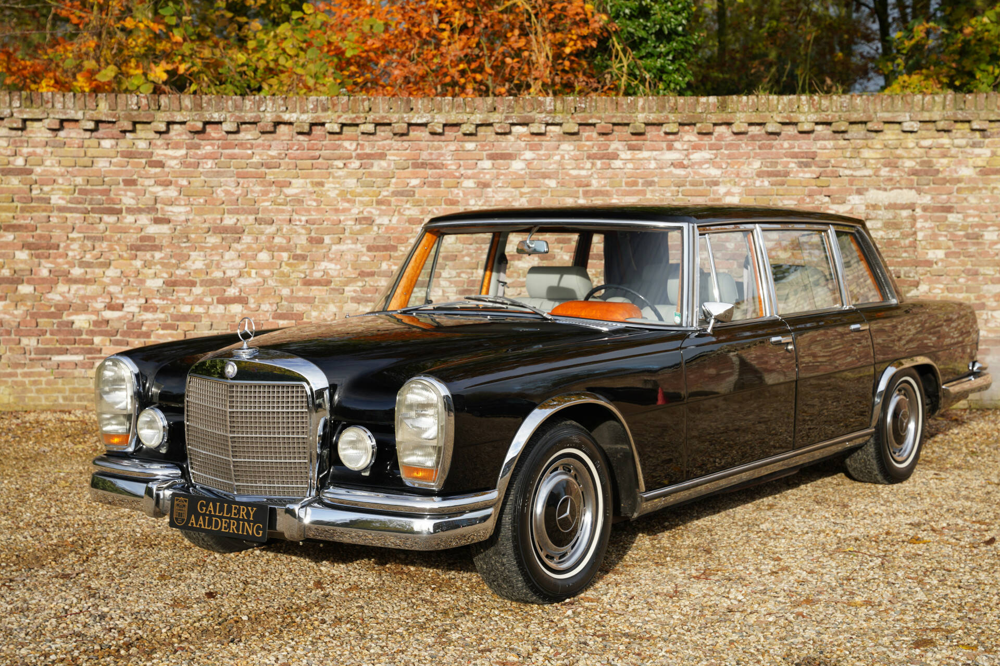
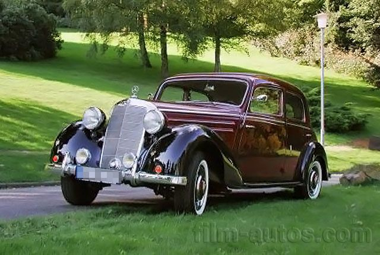
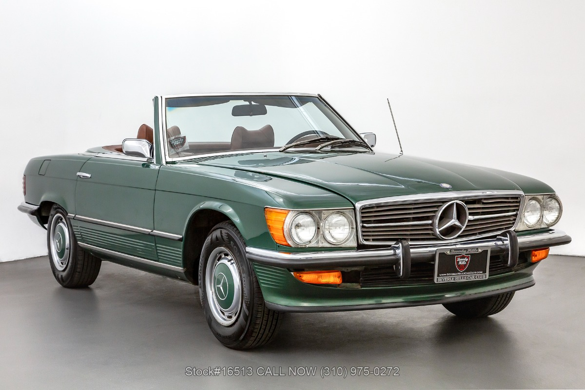

Modell: Mercedes-Benz 300 SL
Baujahr: 1954-1963
Produktionsstückzahl: 1.400
Motor: 6-Zylinder, 3.0L
Leistung: 215 PS
Höchstgeschwindigkeit: 250 km/h

Modell: Mercedes-Benz 540 K
Baujahr: 1936-1940
Produktionsstückzahl: 419
Motor: 8-Zylinder, 5.4L
Leistung: 115 PS
Höchstgeschwindigkeit: 160 km/h

Modell: Mercedes-Benz 600
Baujahr: 1963-1981
Produktionsstückzahl: 2.677
Motor: V8, 6.3L
Leistung: 250 PS
Höchstgeschwindigkeit: 200 km/h

Modell: Mercedes-Benz 170 V
Baujahr: 1936-1942
Produktionsstückzahl: 78.000
Motor: 4-Zylinder, 1.7L
Leistung: 38 PS
Höchstgeschwindigkeit: 95 km/h

Modell: Mercedes-Benz 350 SL
Baujahr: 1971-1989
Produktionsstückzahl: 1.100
Motor: V8, 3.5L
Leistung: 200 PS
Höchstgeschwindigkeit: 220 km/h